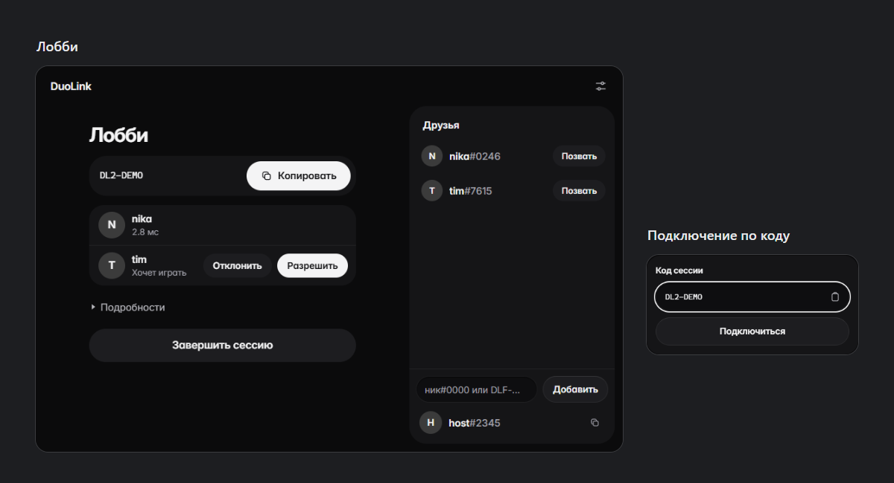

Локальный кооператив через интернет
Запусти игру на своём ПК с Windows. Друг подключится по коду и сыграет с отдельным геймпадом.

Как начать игру
- Скачайте и запустите DuoLink на обоих ПК.
- Хост запускает игру и отправляет другу код сессии.
- Гость вводит код, а хост подтверждает подключение.
Какие игры подходят
Игры с локальным мультиплеером и поддержкой нескольких геймпадов. Это могут быть файтинги, игры с разделённым экраном и эмуляторы. Игра нужна только на ПК хоста.
Подключение без VPN
DuoLink передаёт видео, звук и ввод напрямую между игроками по QUIC. Если сеть блокирует прямое подключение, попробуйте сменить хоста. Встроенного ретранслятора нет.
Видео и задержка
Аппаратное кодирование и декодирование AV1 или HEVC при поддержке железом. Битрейт можно задать вручную или оставить автоматическую регулировку. Встроенных лимитов FPS и разрешения нет. Задержка зависит от маршрута и устройств.